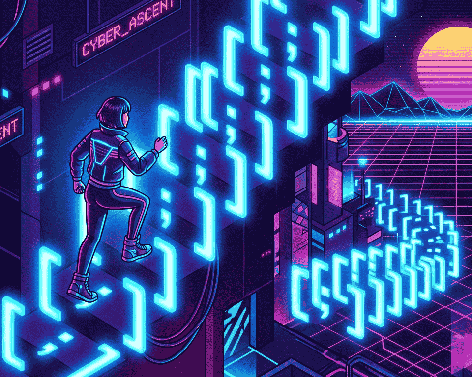
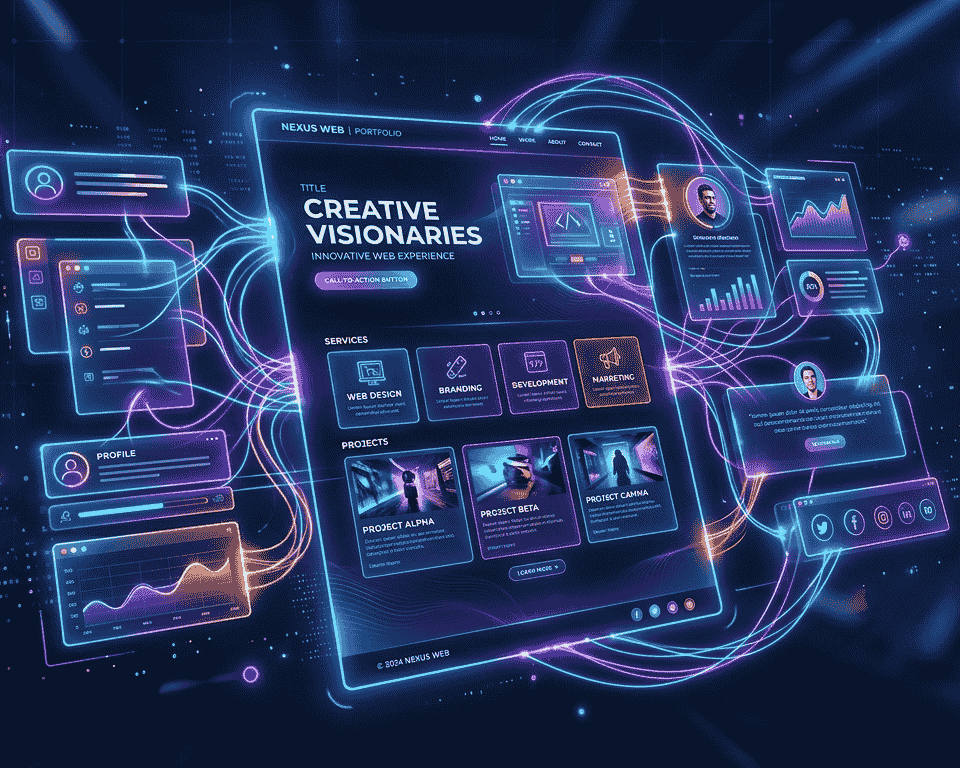

Journey Kickoff
The "Day Zero" Vision
Setting the stage! Sharing why I traded my free time for syntax errors and the big goals I’m chasing over the next few months.
After several months of learning in the Frontend Developer Career Path, I've made the big jump over to the Bootcamp to get expert code reviews of my Solo Projects projects and meet like-minded peers.
April 23, 2026
Setting the stage! Sharing why I traded my free time for syntax errors and the big goals I’m chasing over the next few months.

Talking about that one concept that finally "clicked" after hours of frustration. A raw look at the struggle before the breakthrough.

A tour of my first functional web app. It might not be pretty under the hood, but it works, and it’s mine!

When the code breaks at 2 AM, you learn more than when it works at 2 PM. Reflections on staying calm and debugging life.

Exploring the importance of community in the learning process. Sharing experiences and insights from connecting with fellow developers.

Looking back at who I was on Day 1 versus now. The bootcamp is ending, but the real learning is just beginning.